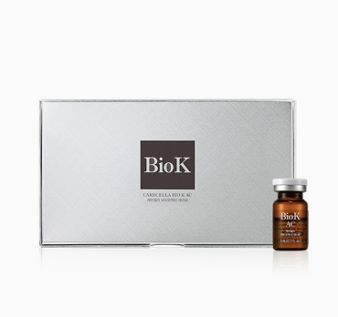

케어셀라 바이오 케이 AC
트러블 진정 및 피지 조절하는 AC 세럼
- 회원가입 없이 회원가
- 지쿱 본사 정품 직접 발송
- 5만 원 이상 무료배송
케어셀라 바이오 케이 AC 상세 설명 · 원료와 특징
문제성 피부의 안정화를 돕고 울긋불긋한 흔적을 개선해 주는 스페셜 앰플 케어셀라 바이오케이 에이씨 케어셀라 바이오케이 에이씨 는 트러블 피부 관리에 적합한 원료 조합 비율로 개발되었습니다. 트러블을 일으킬 수 있는 근본 유발 원인을 방어하고 개선하는 와 울긋불긋한 흔적 개선에 도움을 주는 성장인자 및 펩타이드 Complex 를 기반으로 깨끗하고 청결한 피부 환경을 유지 할 수 있도록 도움을 줍니다.
트러블 진정 · 개선 피지 컨트롤 모공 수렴 작용 레드 스팟 완화 피부결 개선 독자 개발 원료인 AC-5 Complex는 5α-reductase, Lipase, Elastase, P. acne, Sebum 등 트러블을 일으킬 수 있는 근본 유발 원인을 방어하고 개선하는 등의 탁월한 효능을 나타냅니다.
(헥사펩타이트-69D-트립토파닐다이펩타이드-47아마이드) 여드름균에 대한 저해 활성과 항염증 활성에 대한 프로태티아마이신 항생펩타이드 유도체의 거울상 이성질체 아미노산 잔기 및 그 용도 -특허 번호 : 제 10-1540638호 (플로레틴) 플로레틴의 항여드름 및 항염증 용도 -특허 번호 : 제 10-1755091호 (티트리추출물) 과다 분비되는 피지량을 조절하고 자극과 민감한 피부 진정에 도움을 주는 식물 추출물
(테트라펩타이드-44) 청국장 추출물의 제조 방법, 이로부터 제조된 청국장 추출물이나 펩타이드를 유효성분으로 함유하는 염증 관련질환의 예방 및 치료용 조성물 -특허 번호 : 제 10-1393978 (티옥틱애씨드) 강력한 항산화 효과를 통하여 활성산소에 의한 피부의 산화적 손상 또는 노화 등을 감소 [원료적 특성에 한함] Protaetide 연구 개발 스토리 프로테타이드는 썩은 토양과 같은 열악한 환경에서도 균에 감염되지 않고 건강한 컨디션을 유지하는 흰점박이 꽃무지 유충의 항생 펩타이드 유도체에서 아이디어를 얻어 연구 개발 되었으며 화장품 원료로서 분자량 1000 Da 미만으로 줄여 항생 및 항염의 기능은 유지하되 독성 없이 안전하고, 흡수율을 높일 수 있도록 개발 된 특허 원료입니다.
케어셀라 바이오케이 에이씨에 담긴 특허 원료 *프로테타이드를 포함한 조성물 특허 (대한민국 특허출원 10-2019-0105235) 사용 여드름 개선효과 (4주 임상) 대 상 인 원 : 22명 시 험 기 관 : 사 용 방 법 : 4주간 1일 2회 아침, 저녁으로 세안 후 여드름 부위에 바르고 두드려서 흡수시켜 사용 감소 Sebum(피지), Porphyrin(포르피린), Red marks(붉은기) 개선효과 (4주 임상)
성장인자 및 펩타이드 펩타이드 컴플렉스를 함유하여 넓어진 모공과 거칠어진 피부결을 개선하고, 피부층 강화에 도움을 줍니다.
(아세틸옥타펩타이드-17아마이드) (에스에이치-올리고펩타이드-1) (에스에이치-폴리펩타이드-1) (카퍼트라이펩타이드-1) 특허 받은 성장인자 펩타이드 고온과 장기보존 환경에 취약한 EGF와 bFGF 성분을 분자 설계 기법과 컴퓨터 모델링 기술을 접목하여 제품 효능의 안정성을 유지 할 수 있는 특허 성분 으로 개발하였습니다.
[원료적 특성에 한함｜특허 제 10-1519118호, 제 10-1778202호] 서브 부스팅 피부 진정 및 흔적 개선 트러블로 인해 자극 받은 피부 진정을 돕고, 검붉은 흔적들을 개선하여 본연의 피부 컨디션으로 되돌려주는 효과를 나타냅니다.
Niacinamide (나이아신아마이드) Glutathione (글루타티온) Allantoin (알란토인) 주름 탄력 진정 미백 영양 내용물이 닿는 모든 부자재의 초음파 세척 및 고온고압 멸균 트러블 개선에 적합한 특허 원료 및 부스터 성분의 믹스 공법 원료의 효능과 안정성을 유지하는 성장인자 개발 (EGF/bFGF) Bio K AC가 필요한 5가지 피부 고민 과다하게 일어나는 피지 분비 지속적으로
발생하는 거칠고 푸석한 오래 된 트러블 자국 수렴 관리가 필요한 넓은 모공 제품 사용 방법 1회 1병을 개봉하여 피부에 골고루 펴 바른 후 흡수시켜 줍니다.
*개인의 피부 컨디션에 따라 사용량은 조절 가능합니다.
독일 피부과학연구소 더마테스트(dermatest) 엑셀런트 획득 세계 최고 독일 피부과학연구소 더마테스트(dermatest)에 24시간, 48시간, 72시간 인체 피부 적용 실험을 의뢰 “피부자극없음”인 Excellent를 획득 하였습니다.
브랜드 스토리 케어셀라는 ‘낫게하다’를 의미하는 Care 와 라틴어로 세포를 의미하는 Cella 의 합성어로, 피부를 보호하고 개선하여 아름다움을 유지하기 위해 개발된 코스메슈티컬 화장품 브랜드로 시작 하여 현재는 스킨케어를 비롯하여 바디, 헤어, 색조, 향수 등 전체적인 품목을 아우르는 토탈 뷰티 전문 화장품 브랜드 입니다.
각종 인증 사항 비코프인증 획득!
비코프인증(B-Corp Certified) 이란?
B-Corp은 비즈니스를 통해 사회 환경적 문제를 해결하고 사회에 긍정적인 영향을 끼치는 기업을 확대하기 위해서 2007년 BLab (미국비영리 조직)이 만든 글로벌 사회적 기업 인증 제도입니다.
가족친화우수기업 인증 획득!
가족친화인증 가족친화제도를 모범적으로 운영하는 기업 및 공공기관에 대하여 심사를 통해 인증을 부여하는 제도입니다. 가족친화인증 기업은 근로자가 일에 집중하도록 하여 기업 생산성과 경쟁력 강화하고 출산율 제고, 고용 안정 등으로 국가경제 발전에 기여할 뿐 아니라 가족친화경영 확산을 통한 근로자와 가족 구성원의 삶의 질을 향상시키는 바른 기업 문화를 확산 시킵니다.
국제 화장품 규격(Cosmetics GMP)ISO 22716 인증 획득!
Cosmetics GMP(Good Manufacturing Practices) 화장품 우수제조관리기준입니다. 화장품 기업의 제조 시설관리 기준(GMP) 뿐만 아니라, 제품 안전성 관리 시스템(업무체계)의 실행 및 유지가 매우 중요한 평가 요소입니다. 품질 및 안전이 보증된 화장품을 제조하기 위한 제품, 시설 및 공정 기준을 제시합니다. 총 17개의 요구 사항으로 이루어져 있으며, 이 요구 사항들은 인적자원, 건물, 장비 등의 인프라 관리를 기반으로 원재료에서 완제품까지의 제조 관리 기준을 통과해야만 받을 수 있는 인증입니다.
CGMP(우수화장품 제조기준) 인증 획득!
CGMP 인증 CGMP규정의 목표는 소비자에게 신뢰받는 안전하고 우수한 품질의 제품을 제조하기 위하여 작업장의 구조, 설비를 비롯하여 원료의 구입으로부터 생산, 포장, 출하에 이르기까지의 전 공정에 걸쳐 생산과 품질의 관리에 대한 체계적인 기준으로 평가해 모든 단계를 표준화된 기준에 따라 체계적으로 관리해 제품의 품질보증을 달성하는 기업에게 주는 인증입니다.
지쿱 본사 제품 상세페이지 내용을 옮겨 정리했어요.
상품정보제공고시
| 품명 | 케어셀라 바이오케이 에이씨 |
|---|---|
| 용량 | 5 mL * 10 EA |
| 사용기간 | 제조일로부터 24개월 |
| 사용방법 | 1회 1병을 개봉하여 피부에 골고루 펴 바른 후 흡수시켜줍니다. *개인의 피부 컨디션에 따라 사용량은 조절 가능합니다. (스프레이 기기류는 토출구가 막힐 수 있으니 사용을 금합니다.) |
| 화장품 제조업자 및 화장품 책임 판매 업자 | 제너럴바이오㈜ |
| 제조국 | 대한민국 |
| 전성분 | 정제수, 소듐클로라이드, 벤질알코올, 플로레틴, 나이아신아마이드, 글루타티온, 알란토인, 티옥틱애씨드, 다이소듐포스페이트, 티트리추출물, 토코페롤, 헥사펩타이드-69D-트립토파닐다이펩타이드-47아마이드, 테트라펩타이드-44, 아세틸옥타펩타이드-17아마이드, 카퍼트라이펩타이드-1, 에스에이치-올리고펩타이드-1, 에스에이치-폴리펩타이드-1, 에스에이치-폴리펩타이드-60 |
| pH | - |
| 기능성 화장품 심사 필 유무 | 해당사항 없음 |
| 주의사항 | 1. 화장품 사용 시 또는 사용 후 직사광선에 의하여, 사용부위가 붉은 반점, 부어오름 또는 가려움증 등의 이상 증상이나 부작용이 있는 경우 전문의 등과 상담할 것 2. 상처가 있는 부위 등에는 사용을 자제할 것 3. 보관 및 취급시의 주의사항 가) 어린이의 손이 닿지 않는 곳에 보관할 것 나) 직사광선을 피해서 보관할 것 |
| 품질보증기준 | 본 상품의 품질보증 및 피해보상에 관한 사항은 관련 법률 및 공정거래위원회 고시 [소비자분쟁해결기준]에 따릅니다. |
| 소비자 상담 문의 | 카카오톡으로 문의 주시면 지쿱 본사로 접수해 드립니다. |
바이오케이 다른 제품
배송·교환·반품
지쿱 본사에서 직접 발송해요. 50,000원 이상 주문 시 무료배송, 50,000원 미만은 배송비 2,500원이에요. A/S·교환·반품은 카카오톡으로 문의 주시면 지쿱 본사로 접수해 드려요.